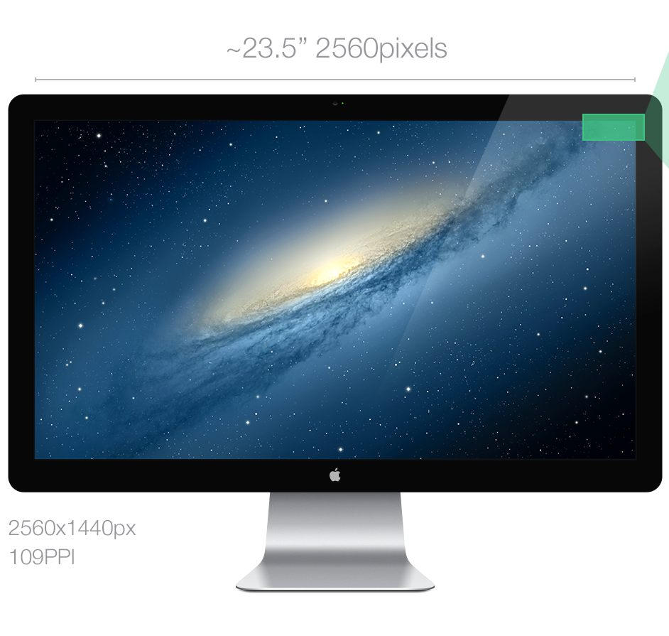
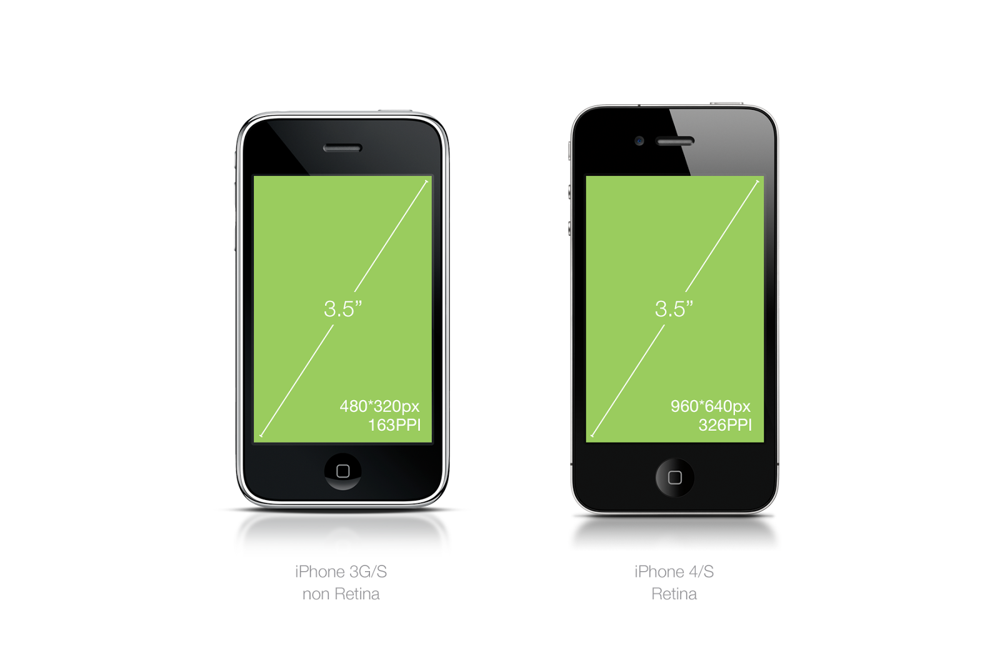
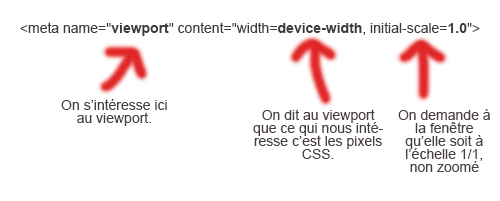

SURFACE RÉELLE
C'est le nombre physique de pixels qui composent l’écran. On le dénomme par le qualificatif : définition. Voici par exemple un écran de 2560x1440pixels. C’est sa surface.

Quelques exemples de surfaces réelles de terminaux divers:
Smartphone:
Tablette:
On remarque très logiquement que plus la surface réelle est grande, plus l’écran sera grand.
CSS PIXEL
La vérité c’est qu’il y a deux définitions au mot pixel: il peuvent être la plus petite unité qu’un écran comporte (le pixel qu’on parle dans la surface réelle) ; ou soit être basé sur une unité optique cohérente appellé “pixel de référence”. (le pixel CSS).
Ainsi, le pixel CSS, plus communément appelé “device independant pixels” (DIPs) est le nombre de pixels virtuels que le terminal pense avoir et sur lequel il fonde son affichage. Pour des raisons de rétrocompatibilité, les constructeurs se basent sur cette unité de pixel qui demeure identique quelle que soit la résolution. La valeur du device-width d’un périphérique est donc non pas exprimée en pixels mais en DIPs.
PIXEL RATIO
Le “pixel ratio” correspond ainsi au rapport entre les pixel réels (hardware) et les pixels CSS (software). Par exemple, l’iPhone 4 est décrit par un pixel ratio de 2 car sa définition en pixel physique est le double de sa définition en pixel CSS.
Surface réelle : 960 x 640
Pixels CSS: 480 x 320
Il y a donc 2 pixels de surface réelle pour un pixel CSS.
Avec ces deux définitions, nous pouvons remarquer le rapport suivant:
width/pixel ratio = device width.
VIEWPORT
On parle souvent à tort de “screen size” (taille de l’écran) mais nous devrions parler de viewport.

On pourrait dire que le viewport, c’est tout ce qui commence avec la balise < html > et ce qui finit avec < /html>. Le viewport c’est la surface du navigateur.
RESOLUTION
A ne pas confondre avec définition, la résolution, c’est le nombre de pixel contenu dans un pouce (2,54cm). Cela n’a donc rien à voir avec la définition d’un écran, on peux d’ailleurs avoir deux écrans de même définition mais avec une résolution différente : l’iPhone 3GS et l’iPhone 4.
Plus la résolution est grande, plus les pixels seront petits (on arrive à en caser plus sur moins de place). Conclusion: en rendu final, les pixels seront moins visibles, cela représente donc un argument marketing fort car la différence entre qualité print et écran se réduit chaque année un peu plus.

Grâce à toutes ces informations, nous pouvons maintenant comprendre la fameuse déclaration HTML5 qui rend tout site “responsivable” :
